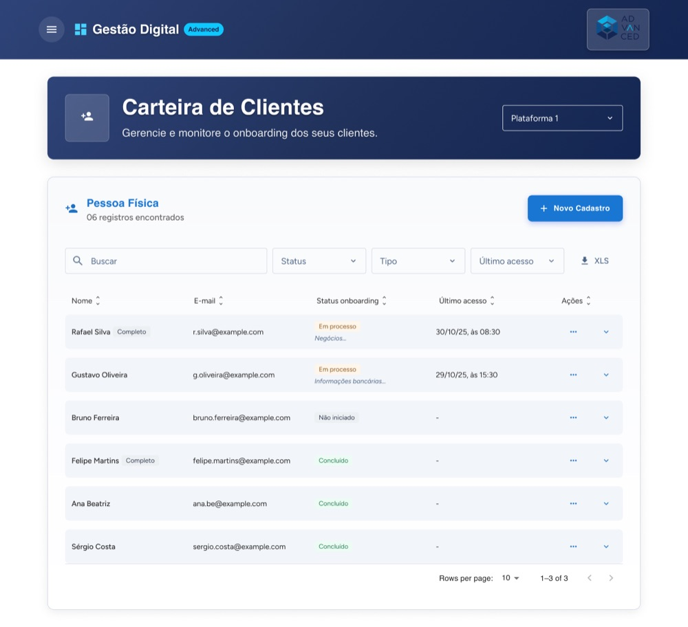

Grupo Advanced
A Ferramenta Interna de Gestão Operacional foi criada para organizar e dar visibilidade aos cadastros originados no produto digital de câmbio, permitindo que áreas internas acompanhassem o processo até a liberação do cliente para operar, reduzindo retrabalho e falhas de comunicação.
Atuei como designer responsável pela condução do projeto, em interação direta com lideranças das áreas operacionais para entender fluxos, definir regras de negócio e estruturar a solução, incluindo testes com usuários e definição das interfaces.
